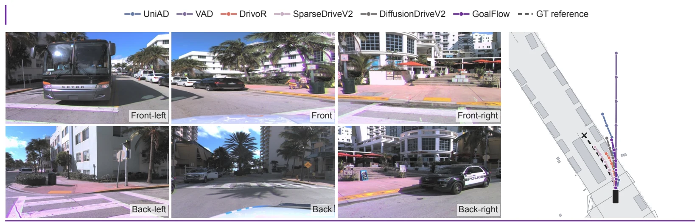
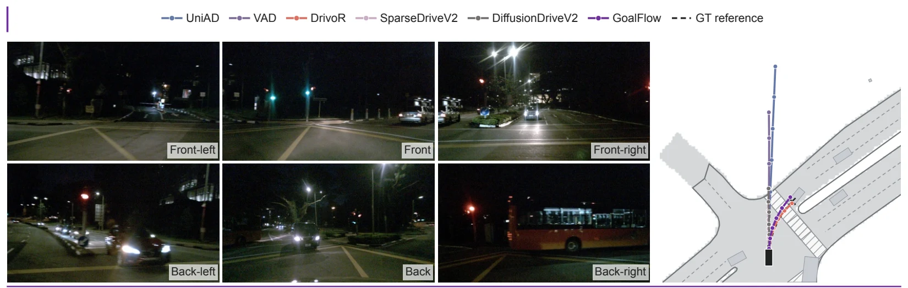
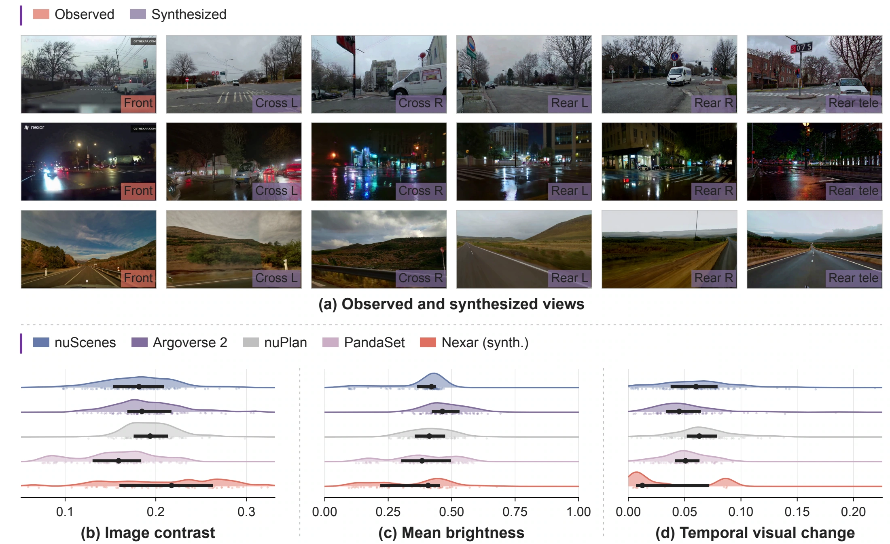

Observation quality
CLIP-IQA+
Inspect texture, sharpness and visible artifacts.
DINO-T
Watch whether scene appearance stays consistent as the camera moves.
Beyond Visual Realism
Benchmarking Generated Driving Scenarios as Policy Tests
Explore renderer pairs, compare six ego policies, and see how generators rank by QTES.
Inspect texture, sharpness and visible artifacts.
Watch whether scene appearance stays consistent as the camera moves.
Inspect the same camera in each render. The score summarizes cross-view geometric agreement.
Follow vehicles through the shot. The score summarizes consistency between appearance and traffic trajectories.
Six ego policies plan from the same camera observations. Compare their predicted paths with the recorded trajectory on the bird’s-eye map.





| Ego policy | Collision-window rate ↓ | Plan TTC ↑ | Drivable-area compliance ↑ | Progress ↑ | Comfort ↑ |
|---|---|---|---|---|---|
| UniAD | 0.302 | 2.598 | 0.952 | 0.960 | 0.633 |
| VAD | 0.337 | 2.632 | 0.950 | 0.941 | 1.000 |
| DrivoR | 0.026 | 2.967 | 0.999 | 0.868 | 0.960 |
| SparseDriveV2 | 0.016 | 2.960 | 0.999 | 0.874 | 0.998 |
| DiffusionDriveV2 | 0.078 | 2.947 | 0.992 | 0.831 | 0.465 |
| GoalFlow | 0.051 | 2.954 | 0.991 | 0.869 | 0.602 |
The QTES leaderboard for seven renderers on 80 paired scenes with CAT-K traffic (Table 2).
| Rank | Renderer | TVC ↑ | RPDMS ↑ | Route completion ↑ | QTES ↑ |
|---|---|---|---|---|---|
| 1 | OpenDWM | 0.543 | 0.724 | 0.878 | 44.079 |
| 2 | DreamForge | 0.495 | 0.729 | 0.881 | 41.311 |
| 3 | HorizonDrive | 0.519 | 0.725 | 0.880 | 40.108 |
| 4 | MagicDrive-V2 | 0.447 | 0.718 | 0.870 | 39.509 |
| 5 | Panacea | 0.374 | 0.717 | 0.881 | 39.146 |
| 6 | BaseDreamer | 0.410 | 0.721 | 0.880 | 38.522 |
| 7 | MagicDrive | 0.363 | 0.670 | 0.855 | 37.282 |
One DrivoR rollout, 20 decisions at 0.5-second intervals. Follow the executed path from above, then inspect the same run camera by camera.
Two nuScenes cases, six views and 80 future frames per renderer.
550 scenario histories. Seven renderers. Six driving policies.
DriveAudit compares policy decisions on paired recorded and generated sequences.

Of 550 histories, 500 come from native multi-camera recordings: 250 nuScenes, 100 nuPlan, 75 Argoverse 2 and 75 PandaSet. The remaining 50 come from Nexar. Each Nexar history provides one recorded camera view; the other five are synthesized.

On 20 matched scenarios, closed-loop RPDMS falls for all seven renderers. DreamForge and MagicDrive-V2 retain the top two QTES ranks.
| Renderer | RPDMS ↑ | QTES ↑ | ||
|---|---|---|---|---|
| Replay | Closed loop | Replay | Closed loop | |
| MagicDrive-V2 | 0.955 | 0.707 | 42.405 | 53.861 |
| OpenDWM | 0.949 | 0.715 | 41.236 | 50.260 |
| Panacea | 0.951 | 0.700 | 37.464 | 47.222 |
| DreamForge | 0.940 | 0.671 | 43.954 | 54.545 |
| BaseDreamer | 0.953 | 0.693 | 38.254 | 52.532 |
| HorizonDrive | 0.961 | 0.700 | 37.668 | 49.421 |
| MagicDrive | 0.954 | 0.692 | 33.285 | 45.999 |
Generate traffic trajectories, render future camera views, then evaluate driving policies on generated and recorded observations.